Пошаговая инструкция: как развернуть готовый шаблон SaaS-сервиса на российском хостинге Amvera и получить работающий сайт с личным кабинетом, подписками и реферальной программой.
Инструкция рассчитана на человека без опыта разработки. Все действия выполняются в браузере — устанавливать программы на компьютер не нужно.
Эта часть доводит проект до работающего демо в интернете. Прежде чем пускать на платформу реальных пользователей и принимать платежи, нужно выполнить боевую настройку — она вынесена в Часть 2. Подробности в разделе «Что дальше».
OpenSaaS — открытый шаблон SaaS-сервиса. Это не конструктор сайтов, а полноценная кодовая база: типовые функции любого сервиса по подписке уже написаны, вам остаётся развернуть их и наполнить своим продуктом.
Знать их не обязательно, но пригодится, когда вы будете дорабатывать платформу самостоятельно или с помощью ИИ-агентов.
| Серверная часть | Python 3.11, FastAPI, SQLAlchemy |
| Интерфейс | Next.js 14, TypeScript, Tailwind CSS |
| База данных | PostgreSQL |
| Лицензия | MIT — можно использовать в коммерческих проектах |
Готовая платформа — публичная страница и личный кабинет пользователя — показана на рисунках 17 и 18 в шаге 9, после того как вы её развернёте.
Навыки программирования не нужны: весь процесс — это заполнение форм в двух веб-панелях.
Заведите текстовый файл и записывайте туда всё, что придумываете по ходу: имя базы, имя пользователя базы, пароль, название проекта. На шаге 4 из этих значений собирается строка подключения, и искать их заново по вкладкам неудобно.
Порядок важен: приложению при первом запуске нужна уже работающая база данных, поэтому она создаётся первой.
Платформа состоит из двух платных ресурсов Amvera: база данных и само приложение. Ниже — минимальная конфигурация, которой достаточно для запуска и первых пользователей.
| Ресурс | Тариф | Мощность | Цена |
|---|---|---|---|
| База данных PostgreSQL | Начальный Плюс | 0,5 ядра, 1 ГБ ОЗУ | 490 ₽ / 30 дней |
| Диск для базы | High Performance SSD | от 1 ГБ | от 36 ₽ / 30 дней |
| Приложение | Начальный Плюс | 0,5 ядра, 1 ГБ ОЗУ, 7 ГБ диска | 490 ₽ / 30 дней |
Около 1 000 ₽ в месяц за оба ресурса. Цены указаны по состоянию на момент подготовки гайда и берутся из скриншотов панели — актуальные суммы всегда видны в самой форме создания при выборе тарифа.
GitHub — сервис, где хранится исходный код шаблона. Amvera будет забирать код оттуда при каждой сборке, поэтому вам нужна своя копия репозитория: в неё вы сможете вносить изменения, не затрагивая оригинал.
Зарегистрируйтесь на github.com, если аккаунта ещё нет. Регистрация бесплатная, потребуется только почта.
Откройте репозиторий шаблона и нажмите кнопку Fork в правом верхнем углу.
На открывшейся странице ничего менять не нужно — подтвердите создание форка.
Через несколько секунд в вашем аккаунте появится репозиторий OpenSaas
с полной копией кода.
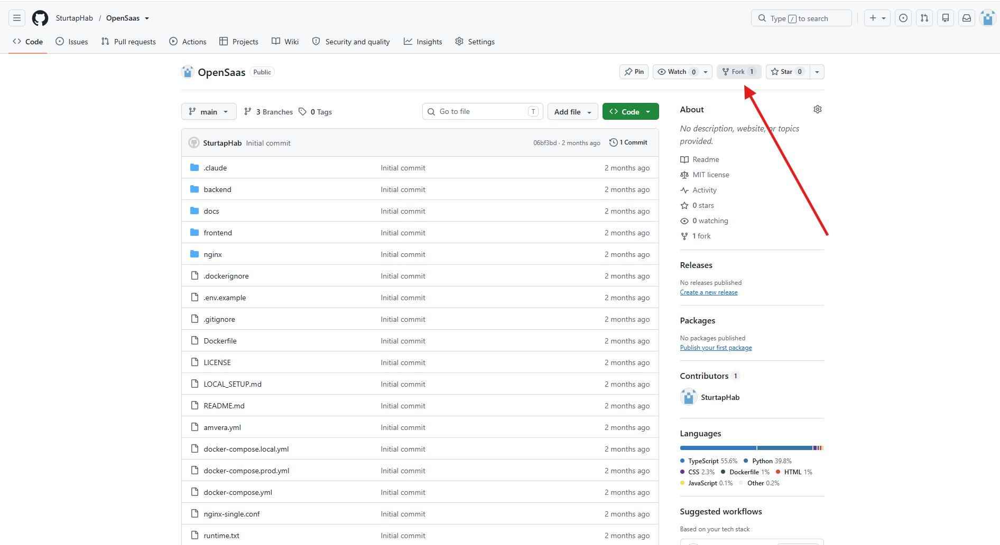
Форк — независимая копия чужого репозитория в вашем аккаунте. Оригинал остаётся нетронутым, а все ваши правки живут в копии. Именно её вы подключите к Amvera на шаге 5.
Amvera — российский облачный провайдер. На нём будут работать база данных и само приложение. Оплата проходит картами российских банков, персональные данные остаются в РФ, VPN для доступа к панели не требуется.
Логин аккаунта Amvera — это не почта и не название проекта. Это короткое имя рядом с балансом в шапке панели. В строке подключения к базе данных он используется как часть адреса сервера, и ошибка в нём — самая частая причина, по которой приложение не может достучаться до базы.
База данных хранит пользователей, подписки, платежи и рефералов. Создаём её первой, потому что приложению при запуске нужно к чему-то подключаться.
В левом меню панели Amvera выберите PostgreSQL и нажмите «Создать базу данных».
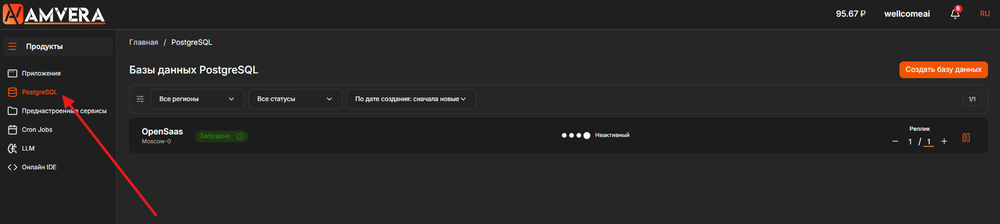
Здесь достаточно задать название проекта — например opensaas.
Регион, тариф базы и тариф диска оставьте по умолчанию: минимальной конфигурации
хватает для старта. Нажмите «Далее».
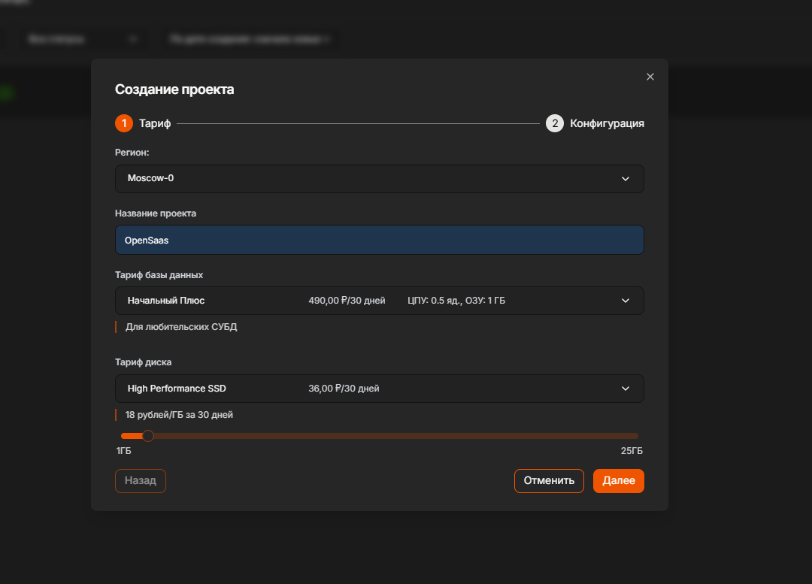
Название проекта базы данных пригодится на шаге 4 — оно входит в адрес сервера. Используйте латиницу в нижнем регистре без пробелов.
Заполните три поля — именно из них позже соберётся строка подключения:
| Поле | Что вводить |
|---|---|
| Имя создаваемой БД | Имя базы, которая будет создана внутри кластера. Латиница, без пробелов. |
| Имя пользователя | Логин, под которым приложение будет входить в базу. |
| Пароль пользователя | Пароль этого логина. Придумайте длинный и случайный. |
Версию PostgreSQL, размер кластера и остальные параметры оставьте как есть. Нажмите «Завершить».
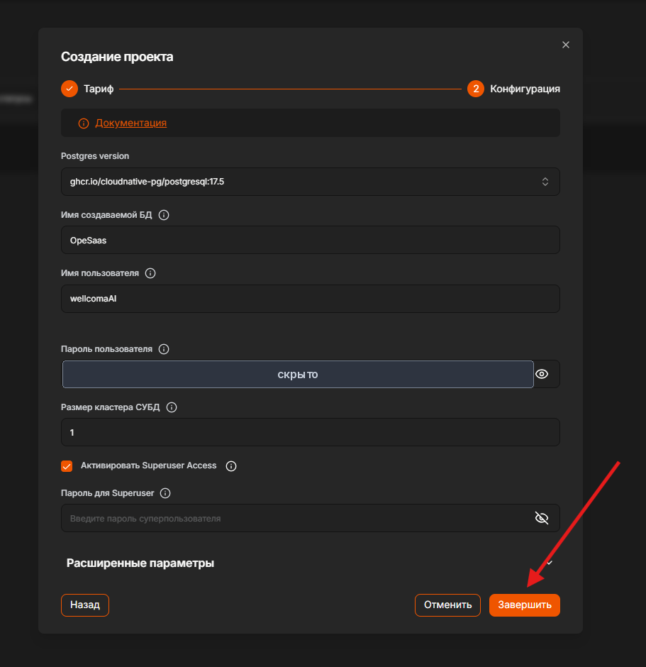
Это боевой доступ к базе с данными ваших пользователей. Не используйте
простые пароли вроде 12345678 и не копируйте примеры из инструкций.
Сгенерируйте случайную строку от 16 символов и сохраните её в менеджере паролей —
восстановить забытый пароль будет нельзя, придётся пересоздавать базу.
Не используйте в пароле символы @, :, / и # —
они являются служебными в строке подключения и сломают её.
Создание кластера занимает около 5 минут. Дождитесь, пока в списке баз статус проекта не сменится на «Запущено». Только после этого переходите дальше.
Приложению нужен один-единственный адрес, по которому оно найдёт базу и войдёт в неё. Такой адрес называется строкой подключения. Соберите её сейчас и сохраните — на шаге 6 вы вставите её в настройки приложения.
Здесь строка разбита на две части только для читаемости. В поле её нужно вводить одной строкой, без переноса и пробелов.
| Плейсхолдер | Где смотреть |
|---|---|
<ПОЛЬЗОВАТЕЛЬ> | Шаг 3.3 → поле «Имя пользователя» |
<ПАРОЛЬ> | Шаг 3.3 → поле «Пароль пользователя» |
<ЛОГИН_AMVERA> | Логин вашего аккаунта — справа вверху в панели Amvera |
<ИМЯ_ПРОЕКТА> | Шаг 3.2 → «Название проекта» базы данных |
<ИМЯ_БД> | Шаг 3.3 → поле «Имя создаваемой БД» |
Допустим, логин аккаунта — myaccount, проект базы назван opensaas,
пользователь базы — saasuser, имя базы — saasdb. Тогда строка будет такой:
postgresql+asyncpg://, а не с postgresql://.< и > удалены — их в готовой строке быть не должно.amvera-, -cnpg- и -rw сохранены без изменений.5432 на месте, а после него идёт / и имя базы.Amvera собирает внутреннее сетевое имя базы автоматически из вашего логина
и названия проекта. Суффикс -rw означает подключение на чтение и запись.
Этот адрес работает только внутри инфраструктуры Amvera — снаружи по нему
к базе не подключиться, и это правильно с точки зрения безопасности.
Теперь создадим само приложение и свяжем его с вашим форком на GitHub, чтобы Amvera могла забирать оттуда код.
Перейдите в раздел «Приложения» и нажмите «Создать приложение». Как и с базой, заполните только название проекта, остальное оставьте по умолчанию. Нажмите «Далее».
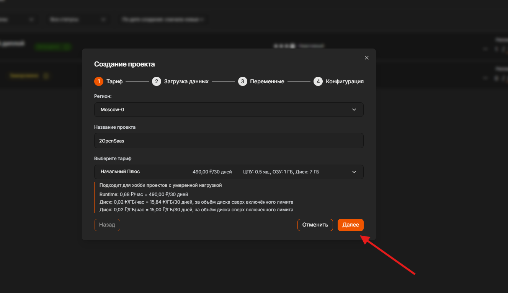
Выберите способ загрузки «Через git», вкладку GitHub и нажмите «Сгенерировать» рядом с полем токена.
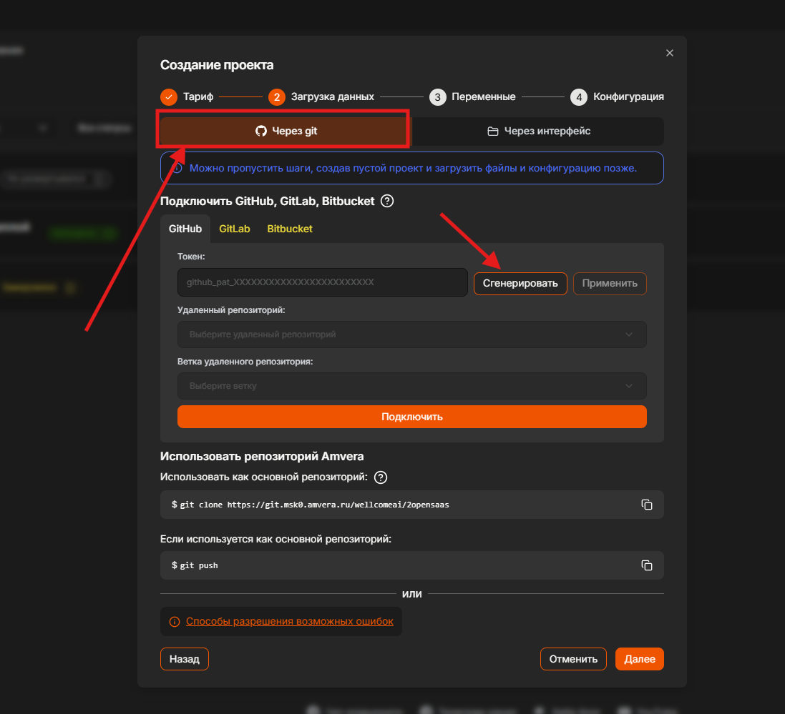
Откроется страница GitHub с уже заполненной формой токена — Amvera подставляет нужные права самостоятельно. Ничего не меняйте и нажмите внизу Generate token.
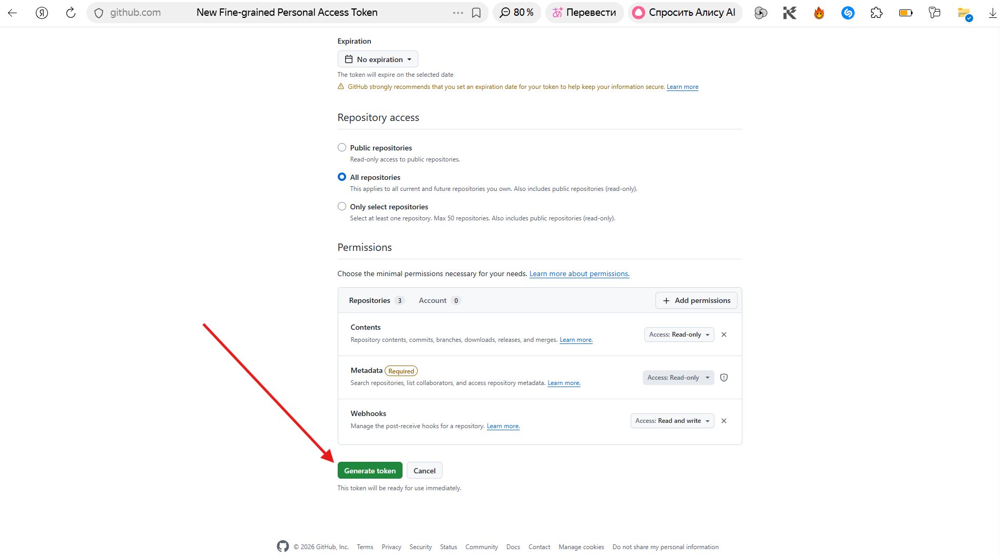
Скопируйте появившийся токен кнопкой копирования справа от поля.
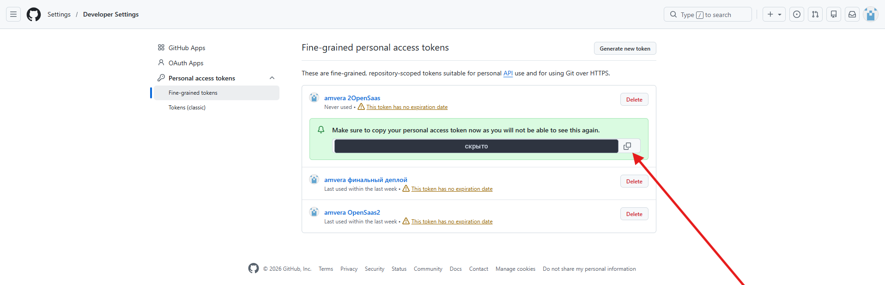
GitHub показывает значение токена один раз: закрыв страницу, увидеть его снова нельзя, можно только создать новый. Токен даёт доступ к вашим репозиториям — не публикуйте его, не пересылайте в мессенджерах и не оставляйте в скриншотах.
Вернитесь на вкладку с панелью Amvera, вставьте токен в поле и нажмите «Применить».
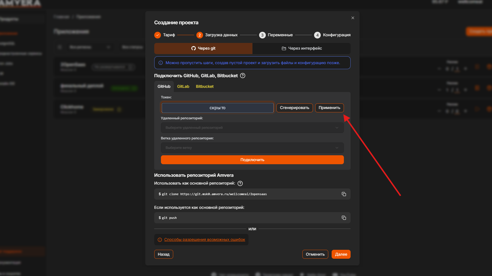
После применения токена станут доступны выпадающие списки. Выберите:
OpenSaas, ваш форк из шага 1.main.Нажмите «Подключить», дождитесь подтверждения и нажмите «Далее».
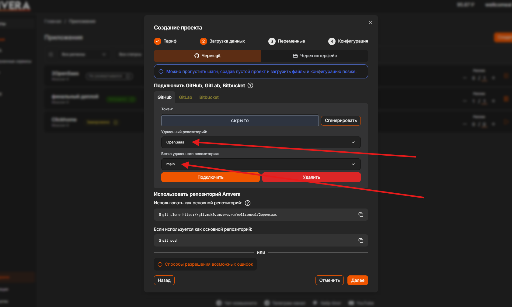
OpenSaas и ветка main выбраныВетка должна быть именно main. В репозитории есть и другие ветки — если выбрать не ту, сборка либо упадёт, либо развернёт не ту версию кода.
Переменные окружения — это настройки, которые приложение читает при запуске. Через них передаётся всё, чего не должно быть в коде: пароли, адреса, ключи. Для первого запуска достаточно двух.
На этапе «Переменные» нажмите «Добавить переменные и секреты». Этап оставьте «Запуск» и заполните две строки.
| Название | DATABASE_URL |
| Значение | Строка, собранная на шаге 4 |
| Название | PGSSLMODE |
| Значение | disable |
Вторую переменную оставляем ровно такой: соединение между приложением и базой идёт по закрытой внутренней сети Amvera, шифрование на этом участке не требуется.
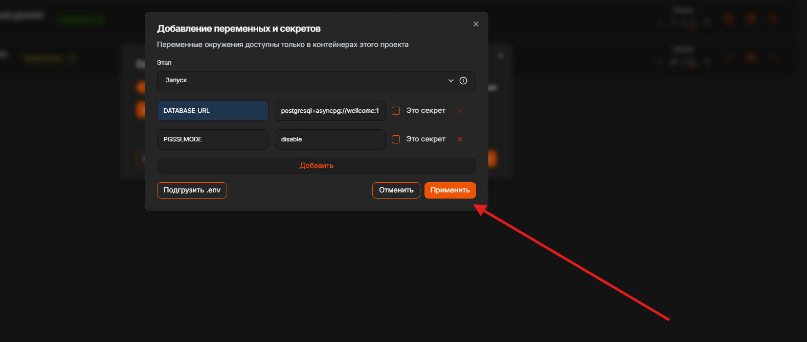
После применения обе переменные появятся в таблице с этапом «Запуск». Сверьте названия символ в символ — они чувствительны к регистру. Затем нажмите «Далее».
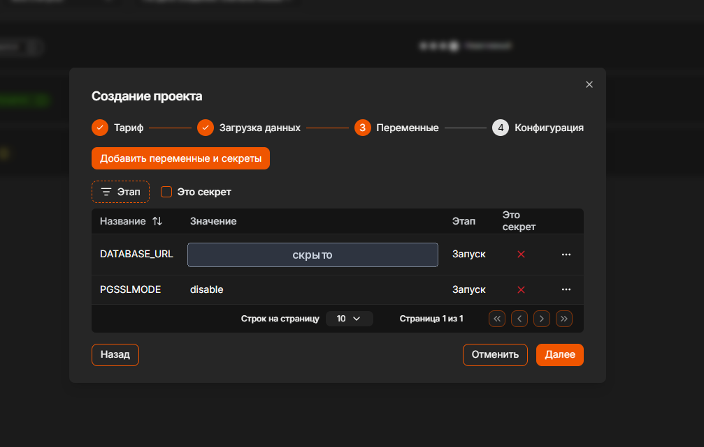
DATABASE_URL
на скриншоте скрыто, у вас там будет ваша строка подключенияОтметка скрывает значение переменной в интерфейсе панели, чтобы пароль не был
виден при демонстрации экрана. Для первого запуска её можно не ставить,
но для DATABASE_URL это разумная привычка.
Настраивать здесь ничего не нужно: в репозитории уже лежит файл
amvera.yml с описанием сборки, и панель подхватывает его сама.
Нажмите «Завершить».
После нажатия «Завершить» Amvera сразу начинает собирать приложение: скачивает код из вашего репозитория, устанавливает зависимости, собирает интерфейс и запускает контейнер.
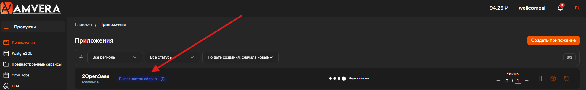
Дождитесь, пока статус сменится на «Запущено». Ход сборки можно смотреть в реальном времени во вкладке «Логи» внутри проекта.
При первом запуске приложение само создаёт в базе все нужные таблицы — пользователей, подписок, платежей. Поэтому база должна быть в статусе «Запущено» ещё до старта сборки: если она не поднялась, приложение не сможет подключиться и упадёт с ошибкой.
Приложение запущено, но пока доступно только внутри сети Amvera. Чтобы открыть его из интернета, нужно создать внешнее доменное имя.
Зайдите в проект приложения и выберите в меню слева «Домены». Там уже будет один внутренний адрес — он служебный. Нажмите «Создать доменное имя».
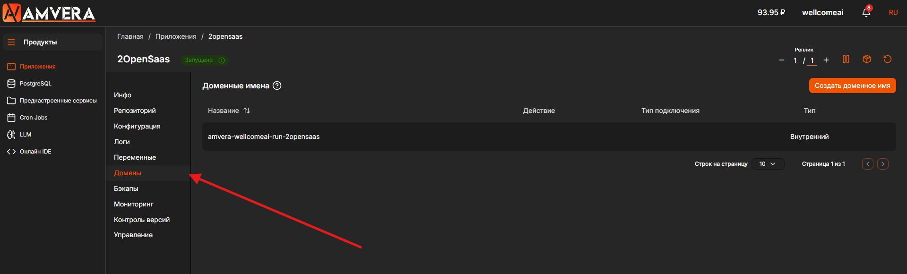
В открывшемся окне укажите:
| Тип подключения | HTTPS |
| Тип домена | Бесплатный домен Амвера |
Имя вида <проект>-<логин>.amvera.io подставится автоматически.
Нажмите «Применить».
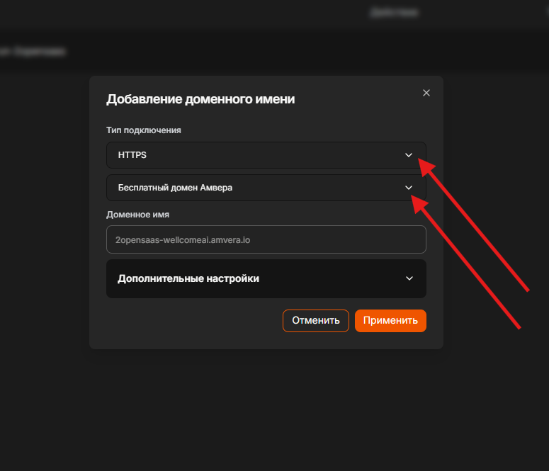
В списке доменов появится новая строка с типом «Внешний». Убедитесь, что переключатель в колонке «Действие» включён — без этого домен создан, но не работает.
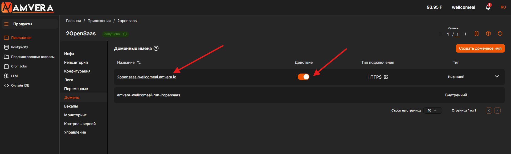
Выключенный переключатель в колонке «Действие». Если после создания домена браузер показывает ошибку — вернитесь на эту вкладку и проверьте его первым делом. Выдача HTTPS-сертификата может занять ещё пару минут после включения.
Кликните по адресу домена в списке — откроется ваша платформа. Пройдите короткий чек-лист, чтобы убедиться, что работает не только главная страница, но и серверная часть с базой.
| Что проверяем | Как | Ожидаемый результат |
|---|---|---|
| Сайт открывается | Перейти по адресу домена | Главная страница платформы, замок HTTPS в адресной строке |
| Серверная часть жива | Открыть /health | Короткий технический ответ, а не ошибка |
| API отвечает | Открыть /docs | Страница с документацией методов API |
| База подключена | Зарегистрировать тестового пользователя | Регистрация проходит без ошибки |
| Кабинет работает | Войти под этим пользователем | Личный кабинет с активным пробным периодом |
Адреса /health и /docs дописываются к вашему домену,
например https://ваш-домен.amvera.io/docs.
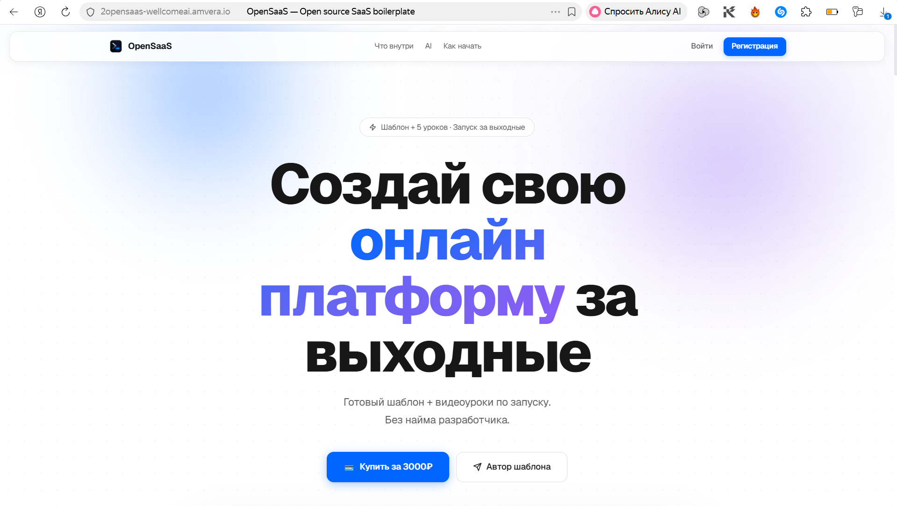
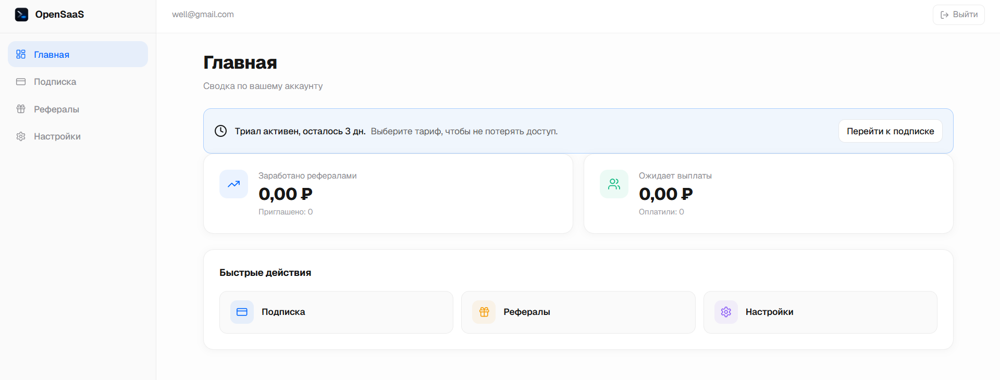
Если все пять пунктов чек-листа зелёные — ваша SaaS-платформа развёрнута и доступна из интернета. Дальше остаётся привести её в боевой вид.
Начинайте диагностику с вкладки «Логи» внутри проекта приложения: там видно, на каком именно этапе всё остановилось.
| Симптом | Вероятная причина и что делать |
|---|---|
| Сборка падает почти сразу | Подключён не тот репозиторий или выбрана не ветка main.
Откройте вкладку «Репозиторий» и переподключите форк, указав ветку main
(шаг 5.5). |
| В логах ошибка подключения к базе данных | Неверная строка DATABASE_URL либо база ещё не запустилась.
Проверьте, что база в статусе «Запущено», и сверьте строку с шаблоном
(шаг 4). Частые ошибки: postgresql://
вместо postgresql+asyncpg://, забытые угловые скобки, опечатка в логине аккаунта. |
| Приложение «Запущено», но сайт не открывается | Не создан внешний домен или выключен переключатель в колонке «Действие» (шаг 8.3). Также дайте пару минут на выдачу HTTPS-сертификата. |
| Главная открывается, но регистрация выдаёт ошибку | Фронтенд работает, а серверная часть не может достучаться до базы.
Откройте /health и /docs — если они не отвечают,
проблема в DATABASE_URL или в самой базе. |
| Сборка идёт дольше 15 минут | Откройте «Логи». Если там ошибка — исправьте причину и запустите пересборку. Если процесс просто идёт медленно — дождитесь завершения. |
| Не приходит письмо о подтверждении почты | Это ожидаемо: отправка писем на данном этапе ещё не настроена. SMTP подключается в Части 2. |
| Забыт пароль пользователя базы | Восстановить его нельзя. Создайте базу заново (шаг 3),
соберите новую строку подключения и обновите переменную DATABASE_URL
во вкладке «Переменные». |
В левом нижнем углу панели Amvera есть «Чат поддержки» и «Документация» — по вопросам, связанным с хостингом, отвечают там.
Платформа развёрнута и открывается из интернета. Но сейчас она работает на настройках по умолчанию из шаблона — этого достаточно для демонстрации, но недостаточно для реальных пользователей.
Прямо сейчас в вашем проекте:
SECRET_KEY) взят из публичного шаблона — он одинаковый
у всех, кто развернул OpenSaaS, и позволяет подделать вход в чужой аккаунт.localhost, из-за чего часть
ссылок в письмах и переходах будет вести не туда.Приложение связано с вашим форком на GitHub: любое изменение в ветке main
выкатывается на сайт пересборкой проекта в панели Amvera. Пересоздавать приложение
и заново вводить переменные при этом не нужно — переменные меняются в любой момент
во вкладке «Переменные», туда же добавляются настройки из Части 2.
| Шаблон OpenSaaS | github.com/SturtapHab/OpenSaas |
| Панель Amvera | cloud.amvera.ru |
| Поддержка Amvera | Чат поддержки и документация — в левом нижнем углу панели |
| Ваш проект | <название>-<логин>.amvera.io — адрес, созданный на шаге 8 |
Вы прошли путь от пустого аккаунта до работающего SaaS-сервиса в интернете: сделали копию кода, подняли базу данных, развернули приложение и открыли его по HTTPS-адресу. Дальше — Часть 2: безопасность, почта, платежи и свой домен.